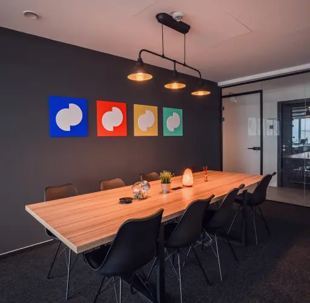
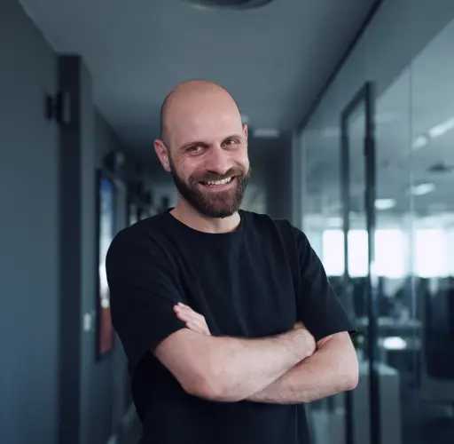
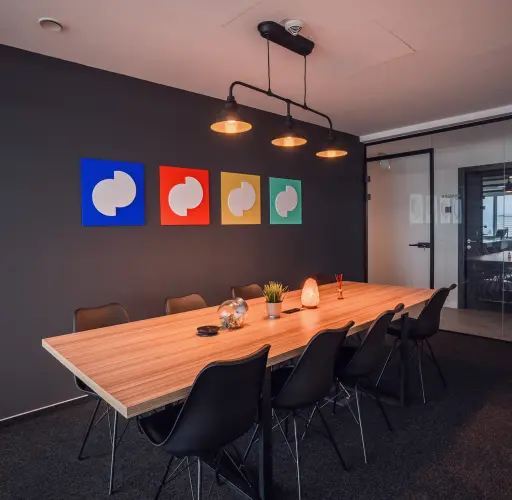
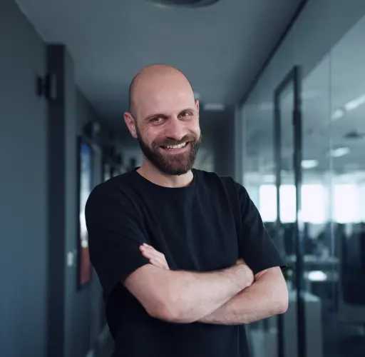

Human & The Machine
Our seasoned engineering and design teams leverage proven AI tools to deliver high-quality results, faster. We use machines; machines don’t use us.
TOP FAST 50 Central Europe
2023
5.0 AVERAGE REVIEW rating
based on 25 reviews

Product Design
Web Development
Engage & Decide
Fiona is a fintech consumer-facing website that enables users to search for financial products, discover them, and receive personalized recommendations.
Great collabolation through the whole process
Alex Whiteside
Product Design
Quality Assurance
Optimize prices to maximize revenue
Corrily tailors your prices and discounts to the needs of different user segments in order to increase your revenue.
Cinnamon is just the best agency I have worked with.
Abel Roboulut

Discovery workshop
Product Design
Database with up-to-date technical info
Avionica offers an encyclopedic overview and a map view of all active aircraft types with all relevant technical and operational data in the mobile digital format.
Cinnamon is just the best agency I have worked with.
Abel Roboulut
Our services

Strategy
Producing, prototyping and testing sketches, high-fidelity wireframes and the final UI is a process that results in intuitive and impactful design that’s easy on the eyes.

Product Design
Producing, prototyping and testing sketches, high-fidelity wireframes and the final UI is a process that results in intuitive and impactful design that’s easy on the eyes.

Development
With GitHub Copilot and ChatGPT, our AI-powered engineering, combined with the right tech stack for each job, ensures we deliver robust solutions on time and within budget.

Quality Assurance
Our QA engineering team makes your product bug-free, bulletproof and performance-driven through both automation and manual testing.

Marketing Growth
By understanding the mechanics of digital marketing, we make sure to put your product, at the right time, in front of the right people.


 


